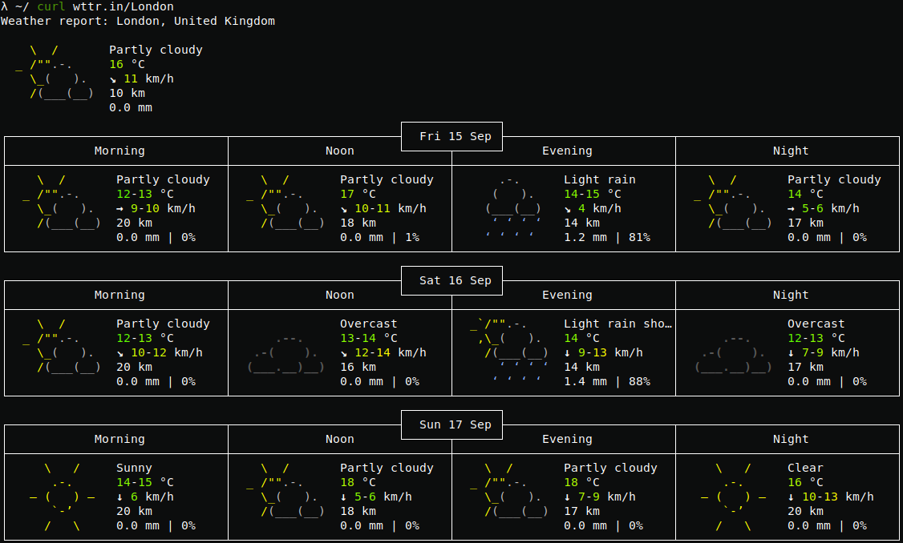
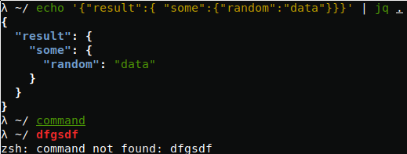

// todo(): 10 useful shell tools to boost web developer workflow
Tips and tricks presented in this article are not essential to build a web application, but when you do stuff in a command line environment in your day to day work it can boost your productivity drastically.
All tools presented here are small utilities that are just making your life easier, none of these can be considered a lifesaver software. However little things that can become a big deal for you in a long run. I will add examples to each part, but I can’t guarantee the correctness of syntax between all Linux distributions and MacOS, as it can vary slightly. If you want to use these on Windows I can recommend you to use a terminal emulator, like Babun. Certain keywords like filename and command will be used as placeholders to actual filename.
1: head & tail
Most of you are probably familiar with head and tail commands, but not everyone knows that they can do more than just to print first and last parts of files respectfully. Using simple shell magic we can, for example, truncate a file to the number of lines from the beginning:1
head -n 100 filename | tee filename
To append these lines to the end of a file instead:1
head -n 100 filename >> filename
Next one is more practical, as you can monitor your logs in real-time:1
tail -F filename
Beware that options -f and -F in tail command is very similar, but have one significant distinction. The -F option will keep track of changes based on the filename and not the inode number, that could change during log rotation.
2: sed
One of the tools that can be really handy when you need to apply certain manipulations on a text file. Search and replace based on regular expressions can be done relatively fast and easy even if the file is too big to open it in a text editor. To replace all occurrences of a string in a file, overwriting the file you can run the following command:1
sed -i 's/find/replace/g' filename
However, that is not all you can do with it. If you only need to count lines in a file:1
sed -n '$=' filename
As I said tail and head commands can give you some portion of data from the end or the beginning of the file, but what if I need something in the middle. Let’s suppose that I know exact line numbers on which needed text resides:1
sed -n '55,60p' filename
It will print all the contents between 55th and 60th lines.
Same in-place truncation that’s can be done with head(first one in this article), can be easily done with sed as well:1
sed -i '101,$ d' filename
It would delete all lines in a file starting from 101.
3: gnomon
The next one is not a built-in Linux utility and it is written in Javascript by Paypal. It prepends standard output with timestamp information, so you can profile execution time of your scripts. This is how I benchmark query execution in MongoDB that is located in Docker container:1
docker exec -i mongo mongo dbname --quiet < benchmark | gnomon
By piping scripts to gnomon, you will get each line time elapsed from the previous line or the beginning of script execution, based on passed options.
You can install it globally using npm or yarn:1
yarn global add gnomon
4: grep
Most of you are probably already familiar with grep, but talking about stuff you can do with pipes, I can’t leave this one unmentioned. By all means grep can be used without a pipe, but that is where it really shines for a web developer:1
php -i | grep 'pgsql'
That way you can filter any command output using patterns or regular expressions. In addition to that, you can use -n option to show line numbers for each match, -c to print count of matches instead and a bunch of others.
5: jq
As you probably used to deal with JSON a lot, jq is a small sed-like tool that can save you a lot of time. Let’s say you receive some JSON-data from a remote application and you want to pretty-print it to make it more readable. Then just pipe it to jq with . as a filter:1
echo '{"result":{ "some":{"random":"data"}}}' | jq .
Here I just simulated remote call with echo, the result output would be:1
2
3
4
5
6
7{
"result": {
"some": {
"random": "data"
}
}
}
The output can be filtered further like this:1
echo '{"result":{ "some":{"random":"data"}}}' | jq .result.some.random
It will print "data", could it be easier than that? In a JSON cumbersome mess jq can be your guide.
6: make
Let’s look at make utility from an unusual point of view. We all know it as dependency-tracking build utility, but it can be used as a task runner. The main benefit of it is that make is available on every Unix-like system, no installation is needed and you can put Makefile with a bunch of project related tasks in your repository and do not worry about another developer would not be able to run it. But why even bother with task runners in the first place? Some shell commands are useful but it’s painful to remember them as they are long and hard to remember. The most common solution is to make an alias in your system to make that command easier to remember and faster to type. But every project might have its own set of handy commands, so it is not a good idea to keep it in one place and it can be advantageous to share these with other developers. This is an example of Makefile contents made for my Go project:1
2
3
4
5
6
7
8
9
10
11unit_test:
@$(call PRINT_INFO, "Run unit-tests")
@go test -v $$(go list ./app/... | grep -v excluded_dir)
fmt:
@$(call PRINT_INFO, "Format")
@go fmt $$(go list ./app/... | grep -v excluded_dir)
define PRINT_INFO
echo -e "\033[1;48;5;33m$1 \033[0m"
endef
Parameters and environment variables can be used in Makefile as well, but be advised that make is using its own syntax that is different from Bash and it accepts only tabs as indentation.
7: awk
To work with text more like rows and columns, rather than patterns, I will recommend using awk over sed. It can be really convenient for file formats, like csv and tsv. For example, if you want to sum the values in the second column of a file and print the total:1
awk '{s+=$2} END {print s}' filename
To use comma as a field separator instead of space -F option can be used. This is how can you print contents of a file without any duplicate rows:1
awk '!($0 in array) { array[$0]; print }' filename
Despite the fact that it can be done more elegant with uniq, I think you got the point. With awk you can write your own mini-scripts to apply on a text file.
8: curl
I advocate using curl whenever data needs to be sent or received in a command-line environment. But let’s start with a fun part. There is a fast way to figure out your IP address, just type one of those:1
2
3
4curl wtfismyip.com/text
curl wgetip.com
curl ifcfg.me
curl eth0.me
There is basically no need to click anything to do that. Moreover, you can get the weather forecast:1
curl wttr.in

Back to work, if you need to debug some particular request and you are using Google Chrome, head on to DevTools, choose Network tab, find a request of interest and right-click on it. In the popup menu under the ‘Copy’ group, there is a ‘Copy as cURL’. That’s awesome! Now you can paste it into Terminal, debug and change it as you wish.
9: bg & fg
Any process that was executed from shell can be rather run in the foreground, that means that it blocks a terminal window, no new processes can not run until that initial one stops or in the background, that can be considered as an asynchronous way. There is nothing too advanced about these features, but it worth noting that any process that was started in foreground can be suspended using ctrl+z keyboard shortcut, monitored using jobs command, resumed by fg, sent to background using bg or stopped by kill %n command where n is a number of a job.
To run a process in the background, to begin with, just append an ampersand (&) to the command:1
command &
10: Bash alternatives
It is important to personalize your working environment the way that suits you. So it can be beneficial to experiment a bit with various programs and frameworks. My personal preference is Z shell over Bash, as it has all advantages of Bash with several additional features. There is a decent overview of Zsh in a presentation by Brendon Rapp that is worth looking. If you are curious, there is a whole lot of awesome stuff you can discover that will enhance your user experience.
I can recommend Oh-my-zsh for styling, Z script for easy navigation and Fish syntax highlighting to make commands look clearer:

That's all for today. Happy coding!